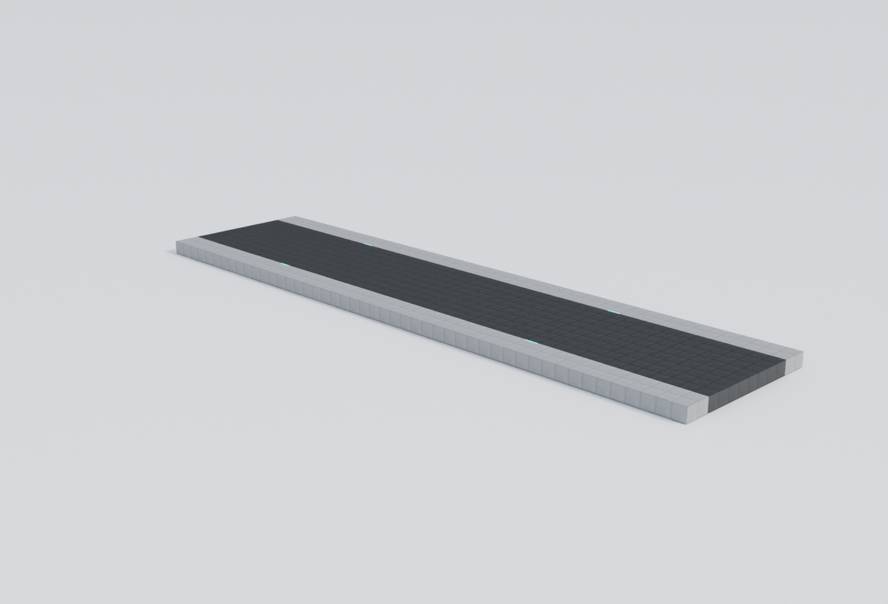
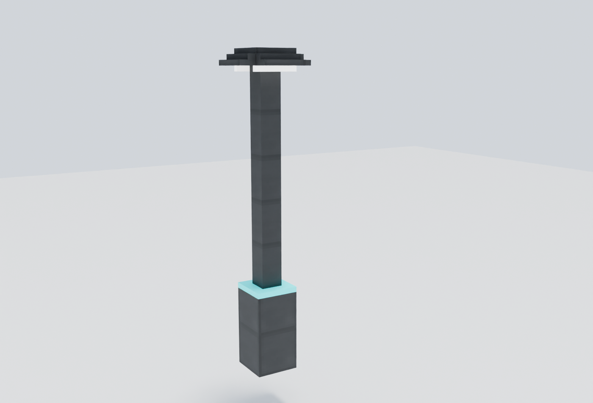

CIVIL FIELD GUIDE / REVISION 02 / GTNH 2.9.2
Your first road.
Your whole city.
A manual construction plan for the 876-square Valier network. Follow one work order at a time, zoom to one block, then inspect its exact state and position.
Local NW origin · +X east · +Z south · civil Y0 = future walkable surface S. World anchor/S/rotation unassigned. Coordinate plan; game sample and field inspection pending.
01 / BUILD ORDER
Start below the street.
P0 · Survey & stakeChoose the actual PDIM origin, S and direction. Check the 876-square envelope and gallery depth. Mark roads at96k..96k+11 and HQ405..469.
P1 · WO01 firstBuild M11's stair and gallery connection at X98..115,Z118..143. Then WO02 north, WO03 west, and the northwest district through WO19.
P2–P4 · Finish the networkWO20..84 continue the civic cross, perimeter and remaining blocks. Keep81 plot takeoffs capped until each building interface is ready.
Read the full hand-build instructions
Open the full text guide
Three different instructions. Permanent grids show NEW blocks. Required-clear grids show modeled clearance. Temporary cap files show removable frontier closures. A blank grid square never means “excavate this whole area.”
02 / EXACT POSITION VIEWER
Every block has an address.
03 / FINISHED ROAD DETAILS
Thin lights. Shaped heads.

Curb inserts, not full cyan cubes.
The exact two-part R01 inset is explicitly sited throughout the city. A7/8 gray face cover and a 1/8 cyan edge share one host, with the lit edge flush to the top inner curb.
The image is the preserved48-block reference module; the whole-city placements and quantities come from this revision's model.

Build one lamp, then repeat.
Half-width centered posts, thin white edges, a cyan plinth band and four real shape 56 cornices. Each site has a 3x3 paved apron, outside the road and reserved building footprint.
Exact SD01 construction source · Every lamp partUse the piece bounds and orientation in the inspector to match your placement preview. Shape bytes describe placed geometry, not inventory damage. Saw acquisition, cutting and actual click modifiers require a target-pack sample; no universal recipe bill is claimed.